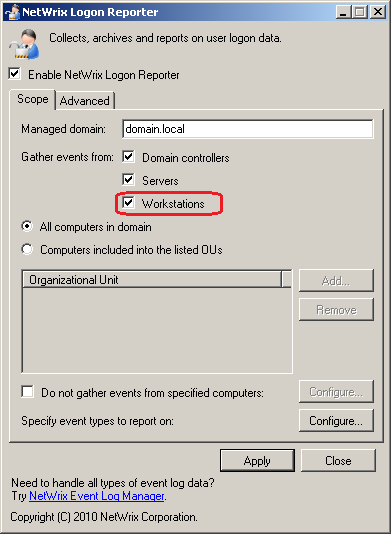

IMPORTANT: This article is outdated and is no longer applicable.
SQL reports do not contain logon/logoff events of users
on workstations.
The NetWrix Logon Reporter Event Detail e-mail report does not contain
logon/logoff events of users on workstations.
NetWrix Logon Reporter is not configured to collect the logon/logoff events from the workstations by default. Tracking logon/logoff events only on domain controllers is not enough to get the information about users" logons/logoffs on their workstations.
Enable the workstations event logs collecting:
- start NetWrix Logon Reporter;
- in the Scope tab, enable the Workstations check box;
- click the Apply button to apply changes.
